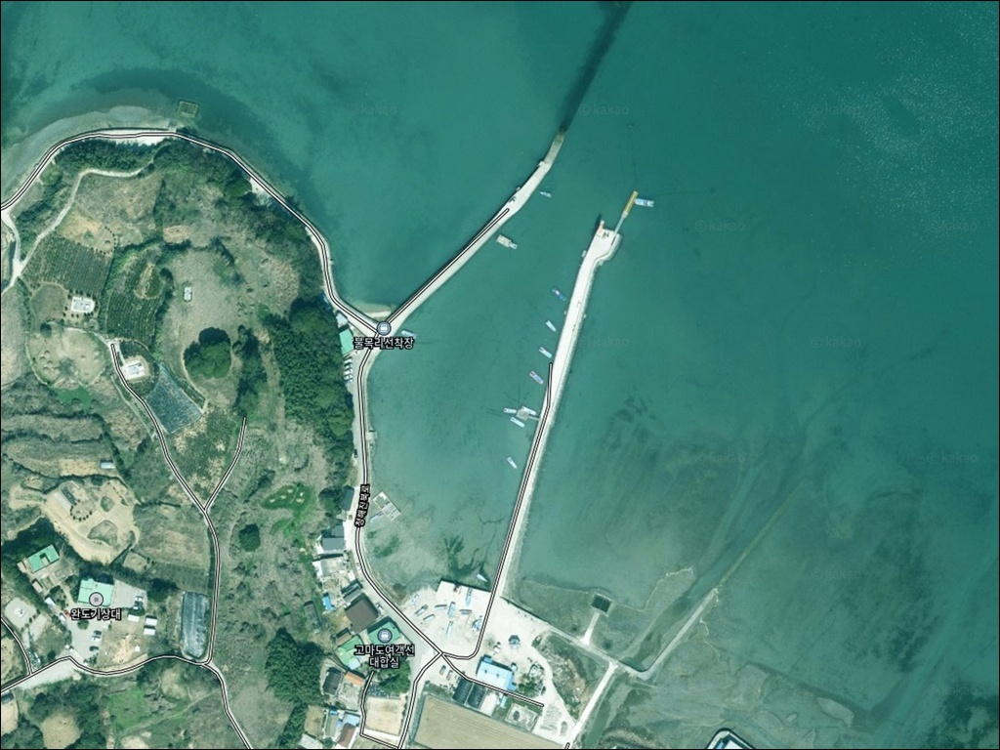
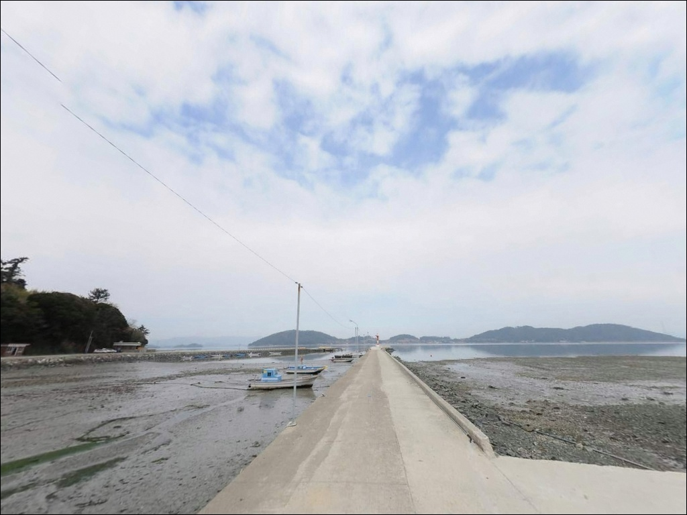
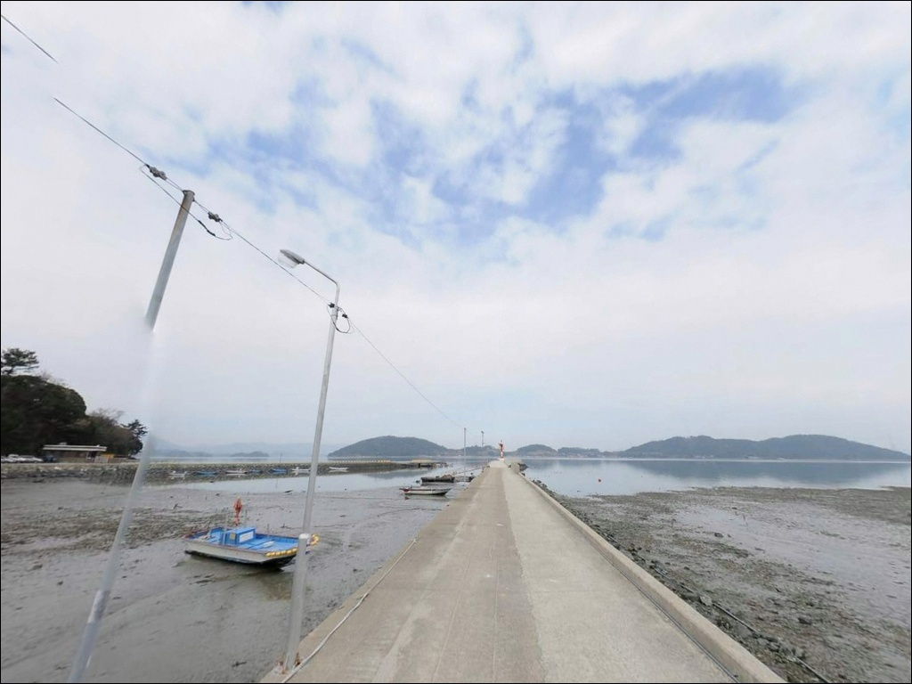
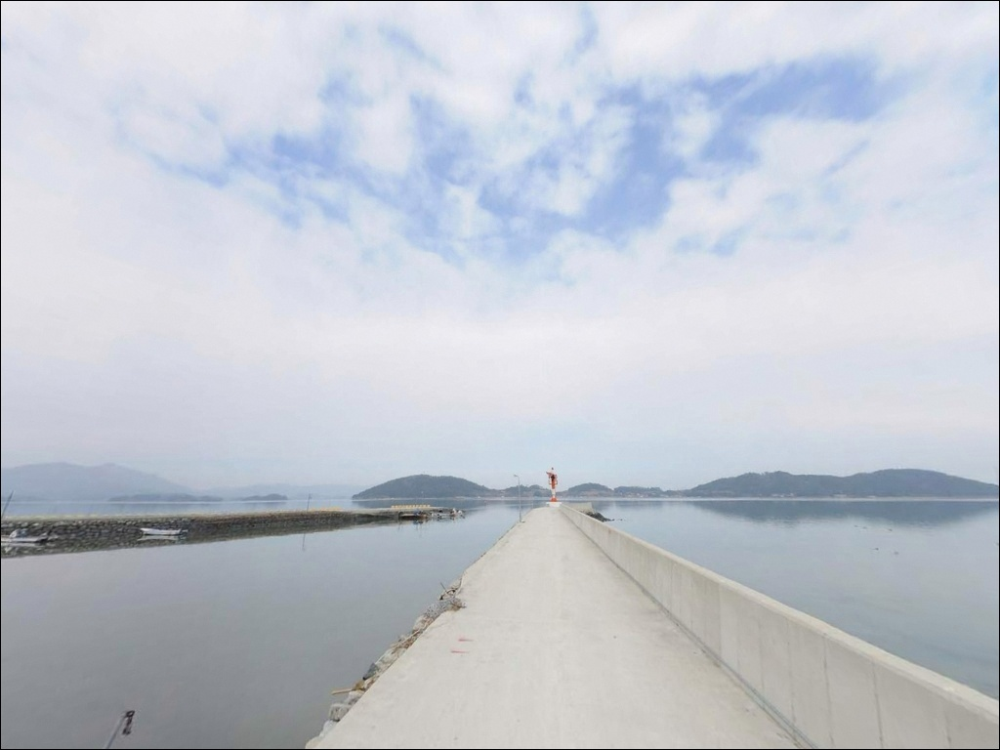
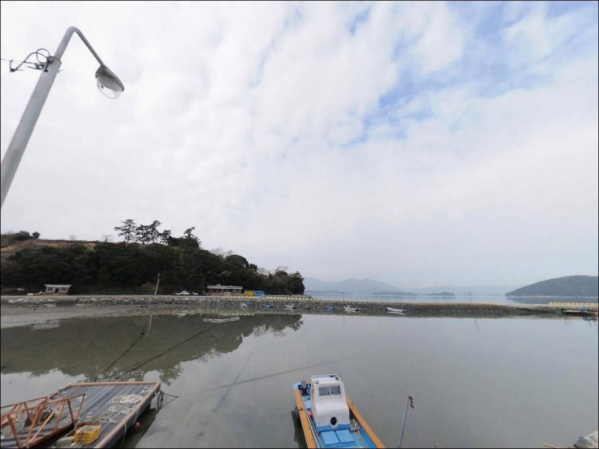
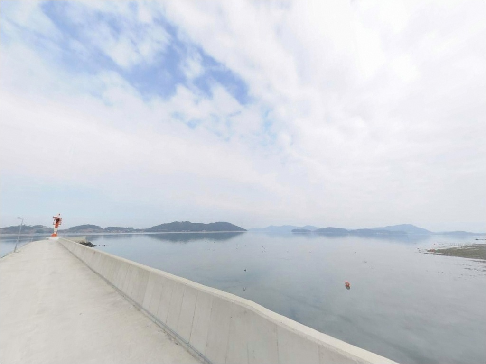
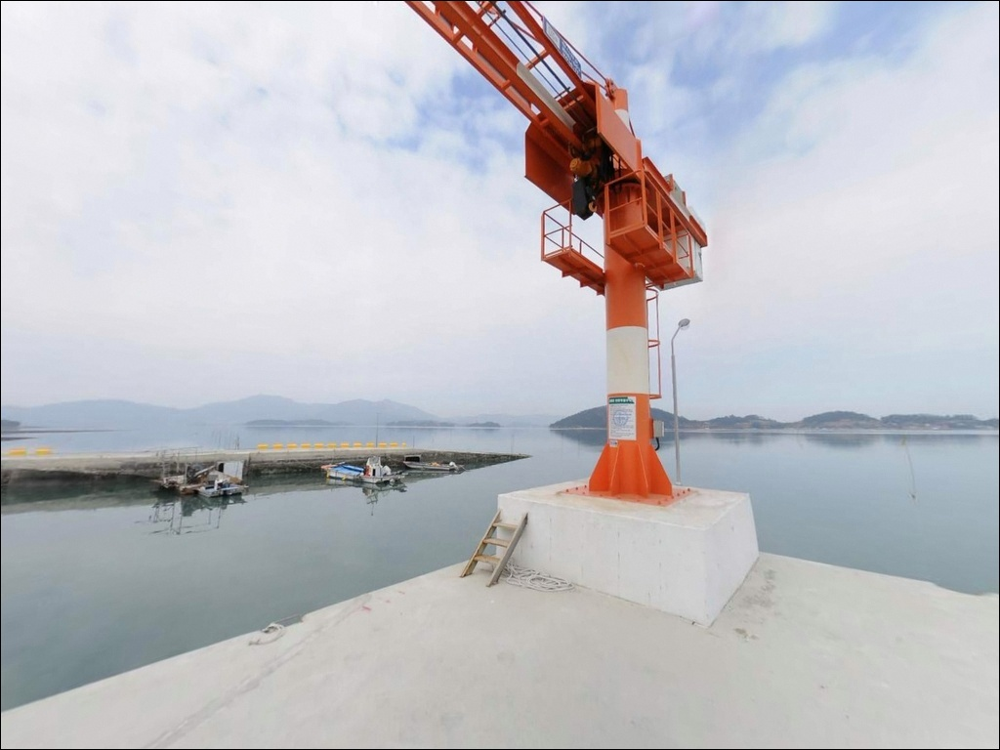
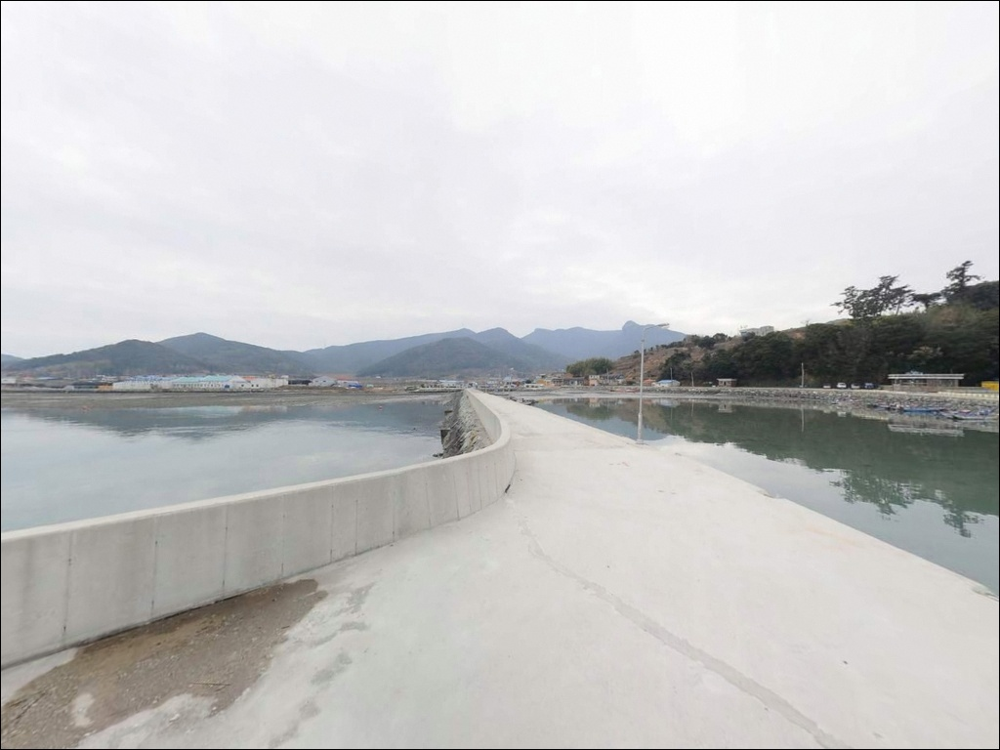
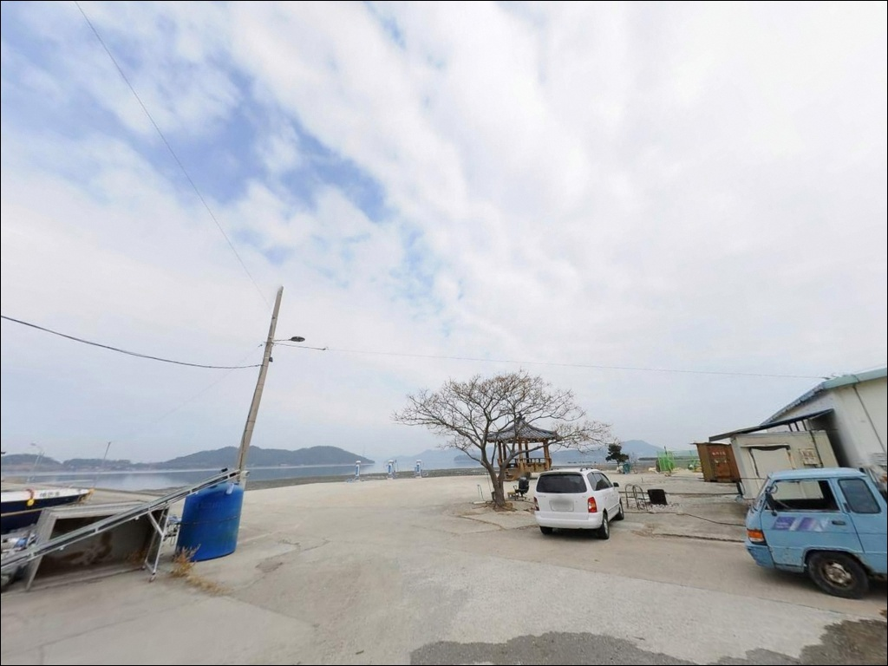

불목리선착장, 전남 완도군 계절에 상관없이 좋은 바다 차박 낚시터 명소
이 페이지에는 광고(제휴 링크 포함)가 있으며, 광고 링크를 통해 구매하면 운영자가 판매 수익 또는 수수료를 받을 수 있습니다. 포인트 사진: 카카오맵 스카이뷰·로드뷰. 이 페이지의 지도·사진 이미지는 카카오맵의 실제 서비스 이미지와 다를 수 있습니다.


포인트 안내
불목리선착장
전남 완도군 군외면 불목리 14-5
불목리선착장은 간조 시 수심이 급격히 낮아지는
펄 바닥 구조로,
물때를 확인하지 않고 도착하면
채비를 펼칠 수심 자체가 확보되지 않는 상황이 생깁니다.
바다타임 기준 이 포인트의 최저 수심은
간조 시 -0.9m 수준까지 낮아지는 구간이 있어,
사리 전후 간조 타이밍에 도착하면
방파제 주변이 사실상 갯벌 수준이 됩니다.
이 글은 불목리선착장의 지형 구조,
진입 여건, 물때 판단 기준,
낚시 방식별 접근 조건에 집중합니다.
조황 단정이나 특정 어종 보장은
이 글의 범위에 포함되지 않습니다.

1. 진입 동선과 포인트 접근성
완도 본섬은 완도대교와 장보고대교로
육지와 연결되어 있어 차량 진입 자체에는
큰 어려움이 없습니다.
불목리까지는 완도 본섬 북서쪽 해안도로를 따라
군외면 소재지를 거쳐 접근하는 경로로,
이 구간은 왕복 1차선 수준의 좁은 포장 구간이
포함되어 있습니다.
대형 SUV나 장비를 가득 실은 차량이라면
출발 전 지도에서 진입로 폭과
회차 가능 지점을 먼저 확인하는 편이 좋습니다.
선착장 끝단은 폭이 좁아
후진 진출이 어려운 차량은
갓길 여건도 함께 살펴야 합니다.
주차는 선착장 진입 전 소규모 공터를
활용하는 방식이 일반적입니다.
마을 선착장 규모 기준 2~4대 수용이
가능한 수준이며,
어선 작업 동선을 막지 않는 자리가
우선입니다.

2. 차박 환경과 야간 체류 여건
불목리는 인구가 적은 소규모 어촌 마을로,
야간에는 차량 통행이 거의 없는 편입니다.
민가와 인접해 있어
완전한 오지 분위기는 아니지만,
밀집도가 낮아 프라이버시는
비교적 조용한 환경입니다.
내해 쪽에 위치한 특성상 파도 소음이 크지 않고,
바람 영향도 외해에 비해 덜한 편이어서
차 안에서 하룻밤 보내기에
소음 측면에서는 나쁘지 않은 조건입니다.
다만 가로등이 있어도 광량이 충분하지 않아
개인 조명 장비는 반드시 준비해야 합니다.
차박 공간 자체는 선착장 공터 수준이라
면적이 협소한 편입니다.
낚시를 마친 뒤 차박 베이스로 활용하는 방식이
현실적이며,
어선 조업 시간대에는 공간 양보가
기본 매너입니다.


3. 주변 편의시설 및 인프라 현황
불목리선착장 반경 3km 이내에서
확인 가능한 편의점이나 마트 정보는
없습니다.
군외면 해안 마을 특성상 소규모 인프라만
갖춰진 지역으로,
식수·얼음·낚시 소품은 출발 전
완도읍 방향에서 완비하고 출발해야 합니다.
완도읍까지는 차로 15~20분 수준의 거리로,
편의점·마트·주유소가 집중된 지역입니다.
응급 상황 발생 시 완도읍 방향이
가장 현실적인 이동 경로이므로,
기본 비상약품과 연락처도
출발 전에 챙겨두는 편이 좋습니다.

4. 진입 전 반드시 챙겨야 할 준비사항
방문 전 가장 먼저 확인할 것은 물때입니다.
바다타임 기준 불목방파제의 수심은
간조 시 상당히 낮아지는 구조로,
사리 전후 간조 타이밍에는
채비를 운용할 수심이 확보되지 않습니다.
초들물~중들물 타이밍을 기준으로
출발 시각을 잡는 것이
이 포인트에서의 기본 판단 기준입니다.
완도 해역은 조류 변화가 빠르고
기상 영향이 즉각적으로 나타나는 편이어서,
출발 당일 아침 기상 예보를
한 번 더 확인하는 것이 필요합니다.
완도 서쪽 해역은 최대 3.9노트 이상의
강한 조류가 나타나는 구간이 있으므로,
방파제 끝단이나 외항 쪽에서는
구명조끼 착용이 필수입니다.
펄 바닥 구조에서는 채비가 바닥에 가라앉아
밑걸림이 발생하기 쉬운 편입니다.
여분 채비는 넉넉하게 준비해두고,
마을 선착장 특성상
어선 작업 동선을 먼저 파악한 뒤
낚시 자리를 잡는 것이 기본 매너입니다.

5. 물때에 따라 달라지는 불목리선착장 낚시 여건
불목리선착장은 완도 본섬 북서쪽 해안,
강진만 방향으로 열린 내해 쪽에 위치합니다.
주변에 고마도를 비롯한 소형 섬들이 분포해
외해의 파도와 바람 영향이 직접 닿지 않는 구조입니다.
수면이 비교적 잔잔하고,
안정적인 환경에서 원투낚시를 즐기기에
적합한 내해형 지형 조건을 갖추고 있습니다.
바닥 저질은 펄이 주를 이루며,
간조 시 수심이 급격히 낮아지는 구조입니다.
방파제 끝단 쪽이나 외항 방향으로 나갈수록
상대적으로 수심이 깊어지며,
조류 흐름도 이 방향에서 더 잘 형성되는 편입니다.
암반 지형도 일부 분포하여
수중 구조 변화가 있는 지점을 찾아볼 수 있습니다.
초들물 전후 타이밍은
이 포인트에서 수심이 차오르며
어종 활성도가 올라오는 시간대입니다.
불목방파제 외항 쪽은 조류가 살아나며
채비 운용이 가능한 타이밍으로,
이 구간을 기준으로 자리를 잡는 것이
이 포인트를 공략하는 핵심 기준입니다.
최신 조황은 방문 전에 반드시 검색해 보시기 바랍니다.


6. 포인트에 어울리는 낚시 스타일
이 포인트 지형에 가장 잘 맞는 방식은
원투낚시입니다.
펄 바닥 구조에서는 바닥층에 서식하는
붕장어나 숭어 계열을 기대해볼 수 있으며,
선착장 끝단에서 외항 방향으로
40~60m 거리를 목표로 캐스팅하는 방식이
이 지형에 어울립니다.
초들물~중들물 타이밍에 맞춰
채비를 내리면 조류 흐름이 살아 있는 구간을
공략할 수 있습니다.
찌낚시도 내항 쪽 잔잔한 구간에서
시도해볼 만합니다.
수면이 안정적인 내항 방향에서
망상어나 학꽁치를 노리는 방식으로,
조류 변화가 작은 조금 전후 타이밍에
어울리는 공략 방식입니다.
야간에는 방파제 주변 가로등 불빛 아래에서
루어낚시를 시도해볼 만합니다.
빛에 모여드는 작은 베이트 피쉬를 따라
농어 계열이 들어오는 패턴이 있어,
소형 미노우나 지그헤드 채비로
방파제 끝단을 천천히 탐색하는 방식이
이 구조에 맞습니다.

7. 대안 포인트와 플랜 B 동선
불목리선착장 조류가 기대에 못 미치거나
공간이 여의치 않다면,
황진리 방파제가 첫 번째 대안입니다.
바다타임에 등록된 검증된 포인트로,
불목리선착장에서 약 3km 거리입니다.
같은 군외면 해안 권역이라 이동 시간이 짧고,
방파제 발판도 안정적인 구조입니다.
더 큰 포인트를 원한다면
장좌리 방파제(약 4.8km)나
원동리 방파제(약 5.5km)로 이동하는
동선이 효율적입니다.
원동리 방파제는 여객선이 운항하는
규모 있는 항구로,
진입과 주차 여건이
불목리보다 안정적인 편입니다.
완도읍 방향으로 이동하면
씨월드 방파제(약 9km)가 있습니다.
갑오징어와 감성돔 포인트로 알려진
완도 대표 포인트 중 하나로,
에깅이나 릴찌낚시를 메인으로 두는
낚시인에게는 이쪽이 더 어울리는 선택입니다.

조용한 완도 내해에서
원투대 펼치기 좋은 포인트입니다
화려한 조과보다 조용한 환경에서
원투대 하나 펼치고 싶은 낚시인이라면
불목리선착장의 내해 분위기는
잘 맞는 편입니다.
사리 간조 타이밍만 피하면
방파제 주변에서 원투낚시, 찌낚시,
야간 루어까지 다양하게 운용할 수 있는
지형 조건을 갖추고 있습니다.
다만 편의시설이 전무하고
차박 공간도 협소해,
완전 자급 체제 없이는 불편함이 따릅니다.
사전에 물때를 확인하고
완도읍에서 준비를 마친 뒤 찾아가는 것이
이 포인트를 제대로 활용하는 방법입니다.
인근 고마도 갯바위나 황진리 방파제를
함께 묶어 이동 계획을 짜두면,
조류나 공간 여건이 맞지 않을 때도
당황하지 않고 대응할 수 있습니다.
조용한 완도 내해에서 낚시와 차박을
함께 즐기고 싶은 낚시인에게
기억에 남는 출조가 될 수 있는 곳입니다.